Señales Informativas
Las señales INFORMATIVAS tienen como finalidad identificar, orientar y hacer referencia a servicios, lugares o cualquier otra informacion que puede ser util para el usuario del camino. Son de color azul con cuadrados blancos e iconos de color negro. Otras son de color verde y las letras con sus simbolos de color blanco. Estas variantes cambian segun el tipo de informacion que transmiten
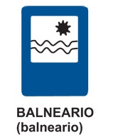
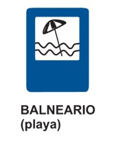
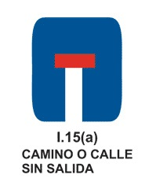
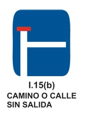
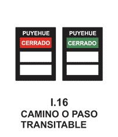
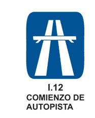
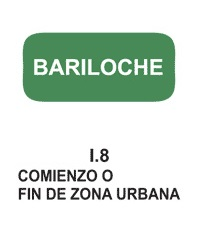
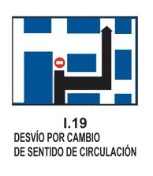
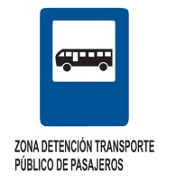
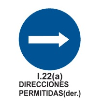
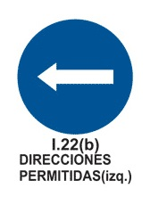
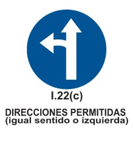
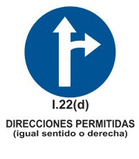
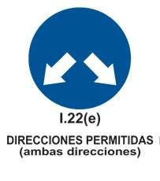
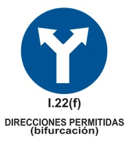
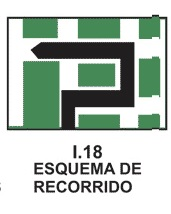
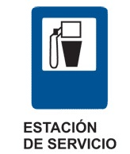
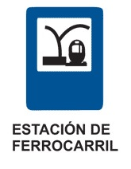
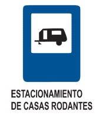
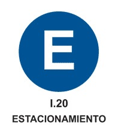
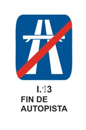
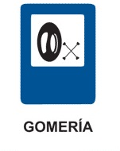
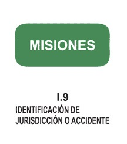
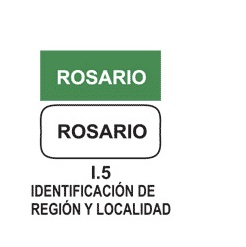
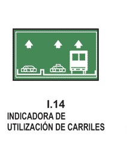
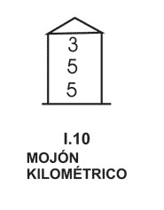
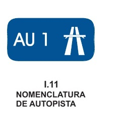
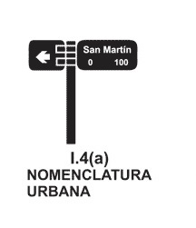
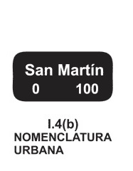
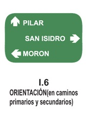
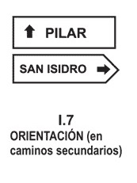
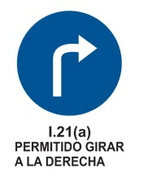
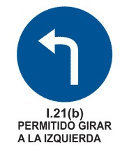
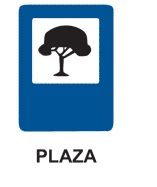
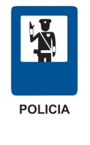
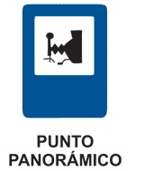
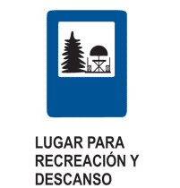
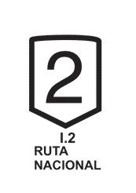
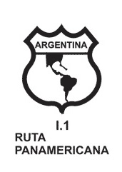
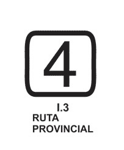
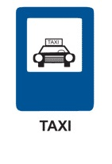
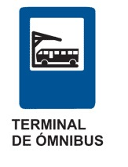
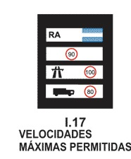